34 Flujos de trabajo desde ArcGIS Pro hacia ArcGIS Online
34.1 Introducción
Alcance del taller
El presente taller establece las competencias técnicas para la migración de flujos de trabajo cartográficos desde entornos de escritorio hacia plataformas en la nube. Se abordará la estructuración de bases de datos espaciales, la optimización de simbología dependiente de la escala y la publicación diferenciada de servicios de entidades (Web feature layers) y servicios de teselas vectoriales (Vector tile layers). El ejercicio concluye con la integración de estos componentes en un mapa web operativo dentro de ArcGIS Online.
Resumen de flujos de trabajo y tipologías de servicios
La correcta ejecución del taller requiere comprender la equivalencia entre los conjuntos de datos locales, las opciones de empaquetado en ArcGIS Pro y los servicios web resultantes en la infraestructura de la nube. La selección del tipo de capa determina las capacidades operativas del servicio, la estrategia de almacenamiento y la demanda de procesamiento en el servidor.
La siguiente tabla compendia la totalidad de los tipos de capas web soportados por la plataforma, estructurada a partir de la documentación oficial de ArcGIS Pro: Introduction to sharing web layers, precisando cuáles componentes serán implementados en el desarrollo de este taller.
| Tipo de capa web | Operación en ArcGIS Pro | Endpoint / Servicio en ArcGIS Online | Función y arquitectura del servicio | ¿Implementado en este taller? |
|---|---|---|---|---|
| Feature layer | Share As Web Layer > Feature | Hosted Feature Layer (Feature Service) | Soporta consulta de entidades, visualización dinámica y edición de geometrías/atributos. Idónea para capas operativas vectoriales. | Sí, para la capa operativa de poblaciones colombianas (colombia_poblaciones). |
| Tile layer | Share As Web Layer > Tile | Hosted Cached Map Service | Visualización rápida mediante teselas ráster prediseñadas y almacenadas en el servidor. Recomendada para imágenes estáticas pesadas o mapas base ráster. | No, se prioriza el formato vectorial por eficiencia en la transferencia de datos. |
| Vector tile layer | Share As Web Layer > Vector Tile | Hosted Vector Tile Layer (Vector Tile Service) | Visualización de alta velocidad basada en teselas vectoriales. Adaptable a la resolución del dispositivo cliente y personalizable mediante estilos sin alterar los datos fuente. | Sí, para la estructuración de la cartografía base nacional (mapa_base_colombia). |
| Map image layer | Share As Web Layer > Map Image | Dynamic / Cached Map Service | Soporta visualización y consulta de entidades. Dibujado dinámicamente por el servidor o desde caché. Exclusivo de despliegues en ArcGIS Enterprise con datos registrados. | No, requiere arquitectura de servidor federado en ArcGIS Enterprise. |
| 3D tiles layer | Share As Web Layer o caché local | 3D Tiles Service | Diseñada para la visualización optimizada de mallas integradas u objetos 3D complejos en escenas web. | No, el alcance del taller se restringe a representaciones bidimensionales (2D). |
| Scene layer | Share As Web Scene / Share As Web Layer | Cached Scene Service | Optimizado para la consulta y visualización de datos 3D (nubes de puntos, edificios, objetos 3D, datos vóxel e información de mallas). | No, el alcance del taller se restringe a representaciones bidimensionales (2D). |
| Gaussian splat layer | Importación de splats 3D | Gaussian Splatting Service | Visualización de alta fidelidad y fotorrealismo para datos geoespaciales 3D basados en geometrías complejas de radiancia. | No, requiere flujos de trabajo específicos de captura de realidad y renderizado 3D avanzado. |
| Imagery layer | Share As Web Layer > Imagery | Dynamic / Cached Image Service | Provee capacidades de visualización, gestión de metadatos, mensuración y procesamiento analítico de imágenes de satélite o sensores remotos. | No, el taller se enfoca exclusivamente en variables vectoriales. |
| Elevation layer | Share As Web Layer > Elevation | Cached Image Service (LERC compression) | Soporta el procesamiento y visualización de fuentes de datos de elevación (DEM/DSM) para definir la superficie del terreno en escenas 3D. | No, no se contemplan análisis de superficies topográficas en esta práctica. |
| Video layer | Share As Web Layer > Video | Video Service | Permite la transmisión y visualización de contenido de video indexado espacialmente. Exclusivo para ArcGIS Video Server. | No, la organización no requiere procesamiento de flujos de video para este ejercicio. |
| Table | Share As Web Layer > Table | Hosted Table (Feature Service) | Almacena y expone datos alfanuméricos no espaciales, permitiendo visualización, filtrado y edición de atributos. | No, las tablas utilizadas se encuentran vinculadas directamente a las geometrías de las capas vectoriales. |
Estructura de directorios del proyecto
El árbol de directorios del proyecto local debe mantener la siguiente estructura para garantizar la correcta vinculación de recursos:
taller_cartografia_web/
├── datos/
│ ├── colombia_formatos.gdb
│ └── [capas vectoriales: departamentos, poblaciones, drenajes, drenajes_doble]
├── imagenes/
│ ├── 01_configuracion_crs.png
│ ├── 02_simbologia_mapa_base.png
│ ├── 03_publicacion_feature_layer.png
│ ├── 04_publicacion_vector_tiles.png
│ └── 05_mapa_web_final.png
├── taller_cartografia_web.aprx
└── index.qmd
Requisitos previos y materiales
Para el desarrollo de las actividades programadas es indispensable contar con:
- Software:
- ArcGIS Pro (versión 3.0 o superior) con licencia activa (Advanced o Standard).
- Quarto CLI instalado.
- Git y cliente GitHub Desktop o línea de comandos.
- Cuentas y acceso:
- Cuenta de organización en ArcGIS Online con privilegios Publisher o Administrator. Nuestra
organizaciónen ArcGIS Online esunalmed - Cuenta activa en GitHub.
- Cuenta de organización en ArcGIS Online con privilegios Publisher o Administrator. Nuestra
- Datos geográficos:
- File Geodatabase (
.gdb) con capas vectoriales de Colombia:- Polígonos de departamentos (límites político-administrativos).
- Polígonos de municipios (límites político-administrativos).
- Puntos de centros urbanos/cabeceras municipales.
- Líneas de red hídrica (drenajes principales y secundarios).
- Líneas (drenajes)
- Polígonos (drenajes_doble)
- File Geodatabase (
34.2 Procedimiento metodológico
Parte 1: inicialización del proyecto y entorno local
- Crear la estructura de directorios
mkdir taller_cartografia_web
cd taller_cartografia_web
mkdir datos imagenes- Iniciar ArcGIS Pro y crear nuevo proyecto
- Abrir ArcGIS Pro.
- Seleccionar
File→New→Project(plantilla “Map”). - Nombre:
taller_cartografia_web. - Ubicación: la carpeta creada anteriormente.
- Seleccionar
Create.
- Vincular la base de datos geográfica
- En el panel
Catalog, hacer clic derecho en Databases. - Seleccionar
Add Database. - Navegar y seleccionar el archivo
colombia_formatos.gdb. - Verificar la conexión en el árbol de
Catalog.
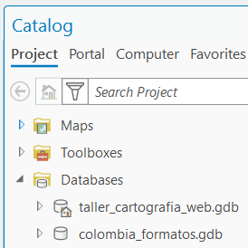
- Crear dos mapas independientes
- En el panel
Catalog, en la secciónMaps, hacer clic derecho →New Map. - Renombrar como
Mapa_Base(destino de publicación Vector Tiles). - Repetir para crear un segundo mapa:
Mapa_Operativo(destino de publicación Feature Layer).
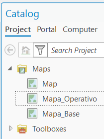
- Loguearse con ArcGIS Pro
En el menú Project → Portals, presionar el botón Add Portal
- Escribir la siguiente URL
https://unalmed.maps.arcgis.com/y presionarOK - En la nueva conexión que aparece al final de la lista como
https://unalmed.maps.arcgis.com/, dar clic en los tres puntos...y presionarSign in. - Digite su usuario y su clave y presione
Sign in - En la nueva conexión
https://unalmed.maps.arcgis.com/, dar clic nuevamente en...y seleccionarSet as Active Portal.
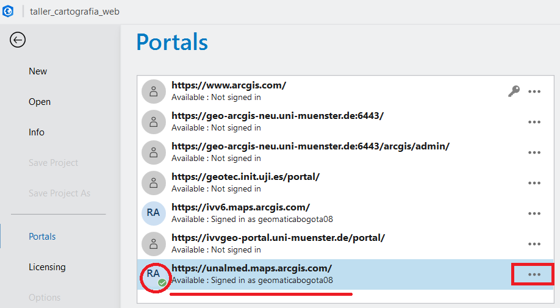
También es posible loguearse a partir del siguiente procedimiento, sin embargo, para poder publicar capas y mapas es necesario registrar el portal y seleccionarlo como activo (procedimiento anterior).
En la parte superior izquierda de ArcGIS Pro realice el proceso de logueo, tal y como se muestra en la siguiente imagen:
- Nombre de la organización:
unalmed - Digite su usuario y su clave
- El sistema le solicitará loguearse nuevamente vía explorador Web, y le enviará un mensaje para continuar con ArcGIS Pro.
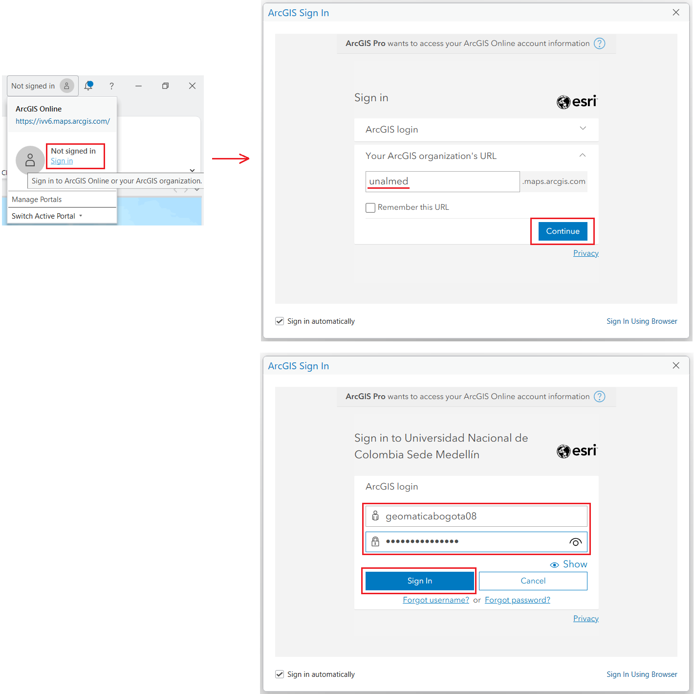
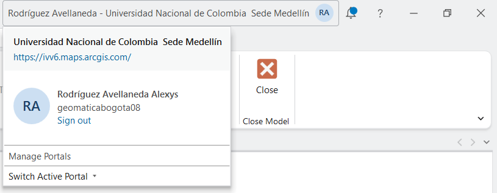
Parte 2: configuración cartográfica y sistema de referencia
- Definir el CRS de Mapa_Base
- Hacer clic derecho en
Mapa_Base→Properties. - Ir a la pestaña
Coordinate Systems. - Seleccionar: MAGNA-SIRGAS / Origen Nacional (EPSG:9377).
- Hacer clic en
ApplyyOK. - Nota técnica: Este CRS es fundamental para mantener la precisión geodésica en las coordenadas almacenadas.
- Agregar capas base
- En
Catalog, expandirdatos→colombia_formatos.gdb. - Arrastrar a
Mapa_Base:departamentos(polígonos de límites departamentales).drenajes(red hídrica).
- Configurar rangos de escala (Scale range)
- Para
drenajes:- Hacer clic derecho →
Properties. - Ir a
General, en la secciónShow the layers between these scales onlyenMinimum Scale (zoomed out) - Seleccionar de la lista desplegable la opción
Customize.... - Agregar la escala
250000. PresionarAddy luegoOk. - Seleccionar de la lista la escala
1:250,000. - Justificación: A escalas pequeñas (nacionales), la densidad de drenajes causa saturación gráfica.
- Hacer clic derecho →
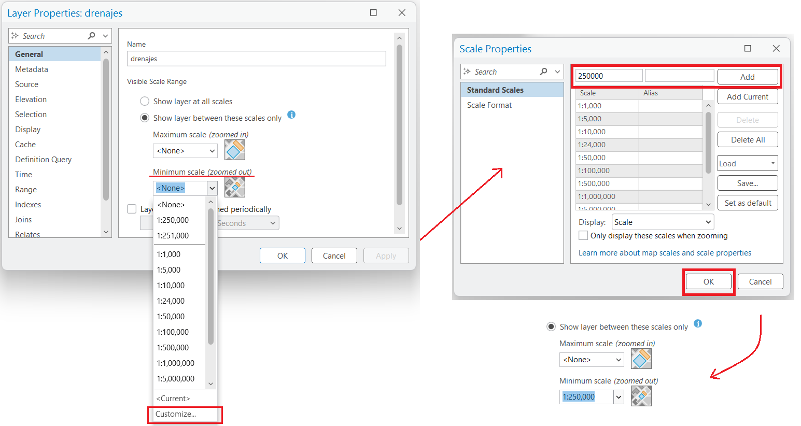
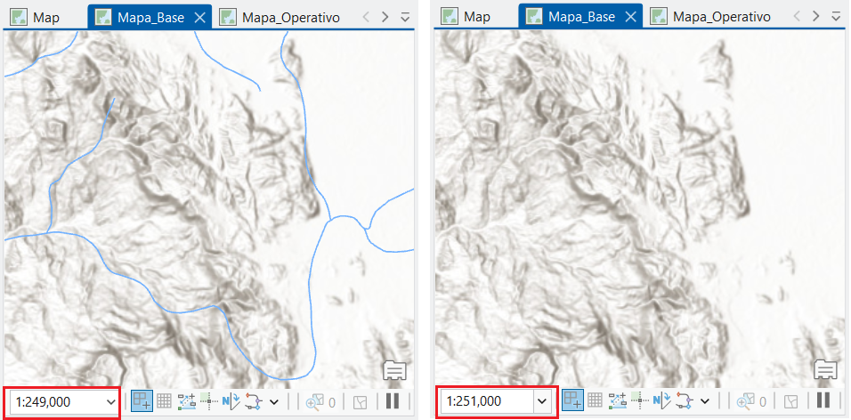
- Para
departamentos:- Dejar sin restricción (visible en todos los niveles de zoom).
- Diseñar simbología del Mapa_Base
- Departamentos:
- Hacer clic derecho →
Symbology. - Elegir color neutro (gris claro #E0E0E0) con borde gris oscuro (#404040).
- Transparencia: 10% para permitir visualización de bases cartográficas inferiores.
- Hacer clic derecho →
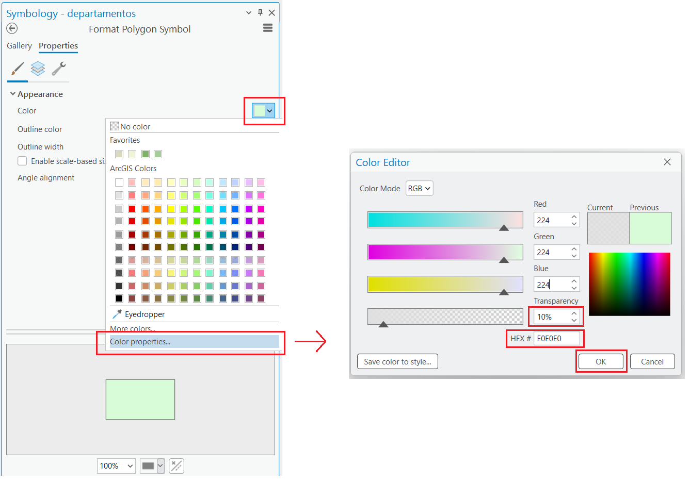
- Drenajes:
- Color: azul claro (#4A90E2).
- Grosor de línea: 1-2 puntos.
- Aplicar transparencia: 50%.
- Configurar etiquetado con Maplex
- Seleccionar
departamentos. - Ir a la banda
Labeling - En la margen derecha asegurarse que la etiquetas de la capa
departamentosesté activada (Enable Labeling) - En la clase
Class 1(por defecto) marcarLabel Features In This Class - Campo:
ADEP_NOMBR. - Fuente: Arial 10pt, color gris oscuro, bold.
- Posición: Centro de polígono.
- Escala de visualización: Solo visible a zoom 1:1,000,000 y superior (aplicar restricción en
Minimum Scale). Por ejemplo a escala 1:900,000, la etiqueta debe ser visible. - Nota técnica: Los estándares de fuente (Arial/Helvetica) garantizan un renderizado consistente en la web.
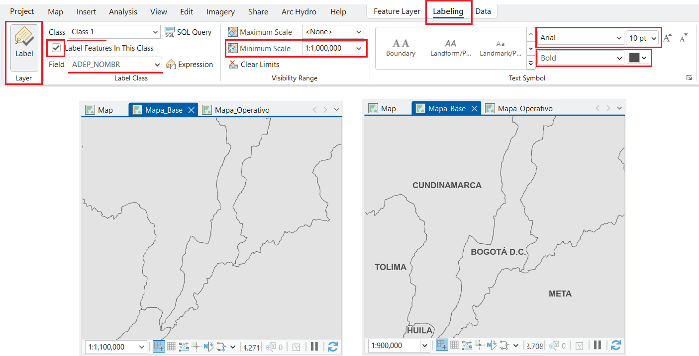
Parte 3: publicación de capas web operativas (Feature layer)
- Preparar el Mapa_Operativo
- Cambiar a vista del
Mapa_Operativo. - Desde
Catalog, arrastrarpoblacionesal mapa. - Configurar simbología:
- Símbolo: círculo rojo (#E74C3C).
- Tamaño: 8 puntos.
- Transparencia: 100% (opaco).
- Publicar como Feature Layer
La publicación en ArcGIS Online desde ArcGIS Pro requiere un portal registrado, activo y con sesión iniciada.
- Seleccione la capa
poblaciones. Active la Cinta/PestañaShare→Web Layer→Publish Web Layer.
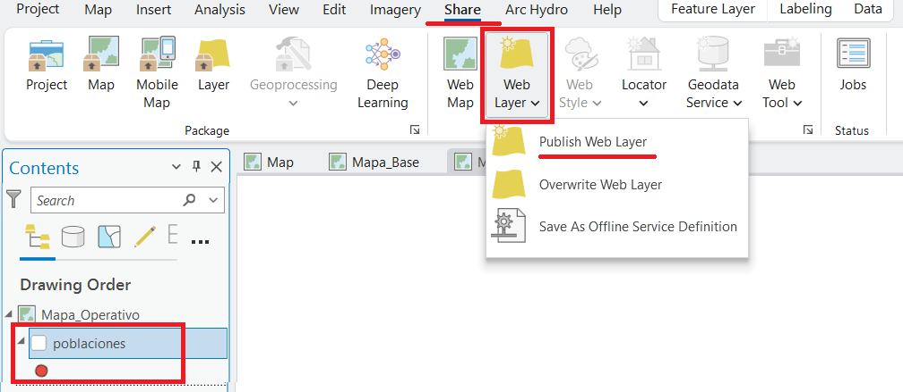
ShareAlternativamente:
- Clic derecho sobre capa
poblaciones→Sharing→Share As Web Layer.
La siguiente imagen muestra la configuración de la ventana Share As Web Layer. Proceda a llenar los campos correspondientes.
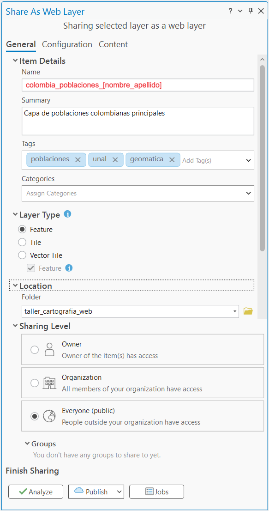
Share As Web LayerConfiguración de parámetros generales (Pestaña General)
La pestaña General define los metadatos básicos, el tipo de capa web, la ruta de almacenamiento y los permisos de acceso dentro de la plataforma.
Item Details (Detalles del elemento)
- Name: Nombre único de la capa en el portal. Para este ejercicio, defina el formato como
colombia_poblaciones_[nombre_apellido]. - Summary: Breve descripción del propósito de la capa (Ej:
Capa de poblaciones colombianas principales). - Tags: Palabras clave separadas por comas para facilitar las búsquedas organizacionales, por ejemplo
poblaciones,unal,geomatica. - Categories: Clasificación temática opcional dentro de la organización.
Layer Type (Tipo de capa)
Determina el formato de entrega de los datos geográficos en la web. Para este procedimiento se debe seleccionar la opción Feature:
- Feature: Capas vectoriales web que soportan consultas de atributos, visualización dinámica y edición de geometrías. Son ideales para superponer datos operativos sobre mapas base.
- Tile: Capas de imágenes prediseñadas (teselas) optimizadas para una visualización rápida de mapas masivos. Proveen contexto geográfico estático.
- Vector Tile: Colecciones de teselas vectoriales y recursos de estilo que se adaptan a cualquier resolución de pantalla y permiten personalización de simbología sin volver a generar los datos subyacentes.
Location and Sharing Level (Ubicación y niveles de compartición)
- Folder: Carpeta de destino seleccionada dentro del contenido del usuario en ArcGIS Online (
taller_cartografia_web). - Sharing Level - Owner: Acceso restringido únicamente al creador del ítem.
- Sharing Level - Organization: Visible para todos los miembros registrados dentro de la organización del portal.
- Sharing Level - Everyone (public): Acceso público general, permitiendo que usuarios externos a la organización consuman la capa de datos. Seleccione esta opción para el ejercicio.
Configurar operaciones permitidas y propiedades avanzadas
Antes de proceder con la validación, es necesario estructurar las capacidades de la capa y los identificadores numéricos en las pestañas adicionales:
- En la pestaña
Content, de clic en el mensajeAllow Assignment Of Unique Numeric IDs, y en la ventana que aparece (Propiedades del MapaMapa_Operativo), marque la casilla de texto para activar esa opción.
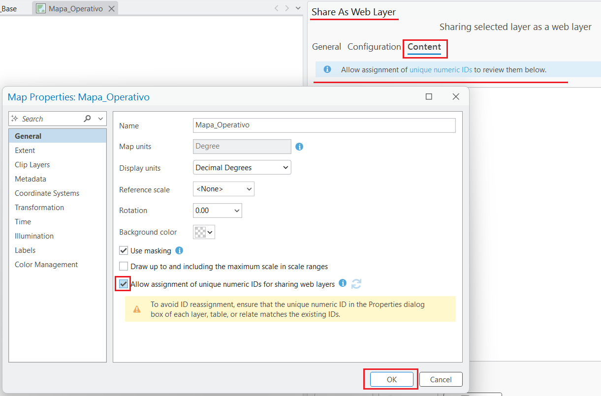
Allow Assignment Of Unique Numeric IDs- En la pestaña
Configuration, ubíquese sobre la secciónLayer→Featurey haga clic en el ícono del lápiz (Configure Web Layer Properties) para establecer las siguientes propiedades operacionales:- Habilitar:
Approve for Public Data Collection - Habilitar:
Enable Sync - Habilitar:
Enable Append - Habilitar:
Export Data
- Habilitar:
La correcta configuración de estas restricciones y permisos operacionales protege la integridad de los datos alojados en la nube y define las capacidades de edición remota.
- En la misma pestaña
Configuration, diríjase a la secciónAdditional Layersy marque la casilla correspondiente aWFSpara habilitar el servicio web estándar del Open Geospatial Consortium.
Validar y publicar
- Clic en
Analyze: El sistema ejecutará una inspección de consistencia. En caso de presentarse advertencias de metadatos faltantes, asegúrese de completar los campos deSummaryyTags. No deben reportarse errores críticos para proceder. - Clic en
Publish: Inicie el proceso de carga y espere el mensaje de confirmación de finalización exitosa en el portal.
Parte 4: publicación de teselas vectoriales (Vector tile layer)
- Activar vista del
Mapa_Base
- Cambiar a la pestaña
Mapa_Base, ver siguiente imagen.
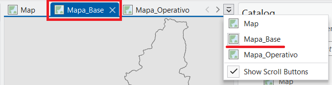
- Publicar como Vector Tile Layer
- Pestaña
Share→Web Layer→Publish Web Layer.
- Parámetros de publicación del mapa base
- En el panel Share As Web Layer, configurar los siguientes parámetros en la pestaña
General:- Name:
mapa_base_colombia_[apellido_estudiante]. - Summary:
Mapa base usando capa de departamentos y drenajes. - Tags:
colombia,basemap,unal. - Layer Type: Seleccionar
Vector Tiley asegurar que la casillaFeatureesté activada de forma complementaria. - Location: Seleccionar la carpeta
taller_cartografia_web. - Sharing Level: Seleccionar
Everyone (public).
- Name:
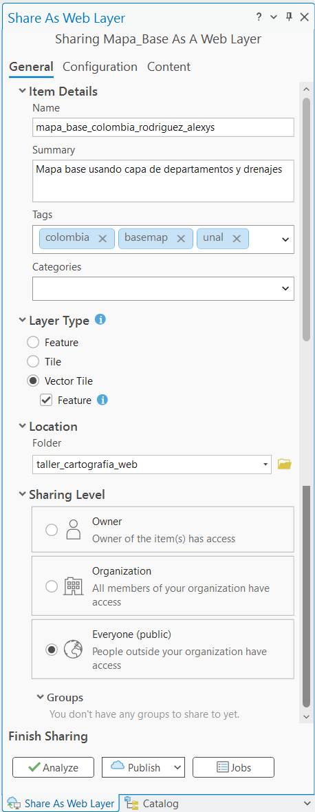
Vector Tile- Optimizar niveles de zoom (Tiling scheme)
- Pestaña
Configuration. - En
Tiling Scheme:- Minimum Level: 5 (escala global).
- Maximum Level: 17 (nivel de calle).
- Nota técnica: Las teselas vectoriales se cachean automáticamente, mejorando la velocidad de transferencia en navegadores y dispositivos móviles bajo el esquema Web Mercator (EPSG:3857).
- Resolver invonvenientes detectados por el analizador
- Hacer clic en
Analyze. - Simplificar configuraciones gráficas no soportadas si el analizador lo requiere.
- Habilitar
Allow Assignment Of Unique Numeric IDsen el mapaMapa_Base. - Eliminar capas tipo
BaseMaps(ej:World Topographic Map,World Hillshade) en el mapaMapa_Base. - Hacer nuevamente clic en
Analyzehasta que se hayan resuelto los errores y advertencias - Hacer clic en
Publish.
Parte 5: integración en ArcGIS Online y creación del mapa web final
- Acceder a ArcGIS Online
- Iniciar sesión en el portal institucional (
https://unalmed.maps.arcgis.com/).
- Verificar capas publicadas
- Ir a la sección
Content(Contenido) y verificar la existencia de laFeature Layery laVector Tile Layerpublicadas.
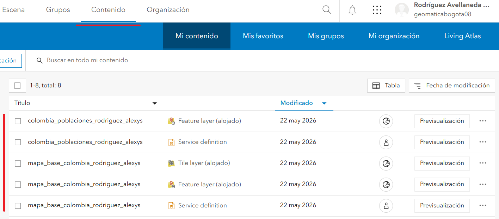
Content (Contenido) en ArcGIS Online- Crear nuevo mapa web
- Seleccionar
Mapa(Map) para abrirMap Viewer. - En el panel izquierdo, hacer clic en
Layers→Add.
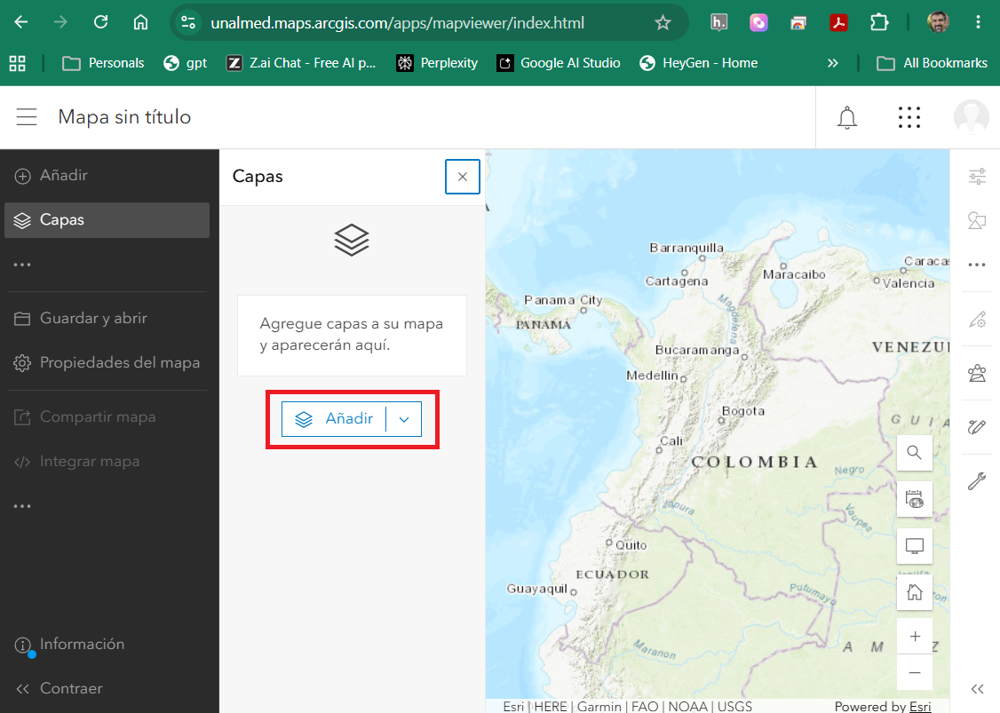
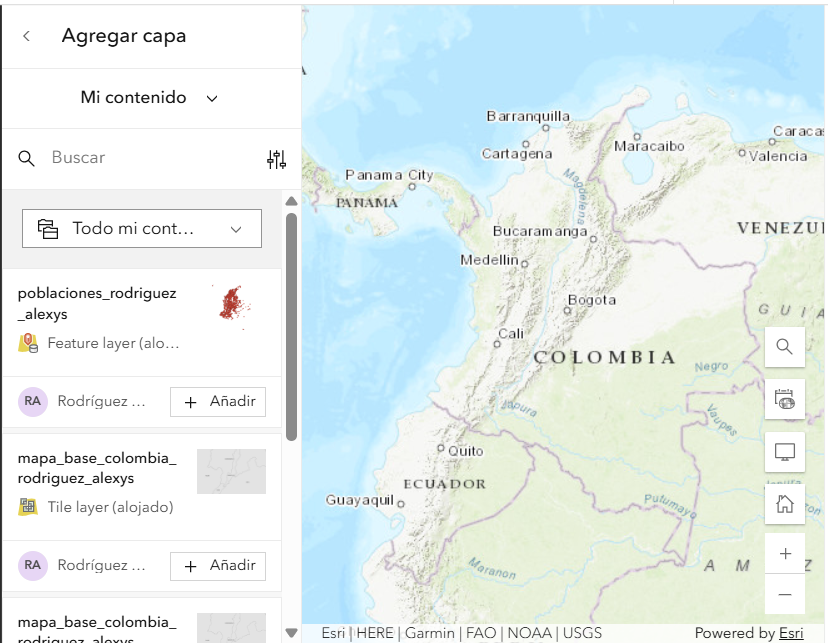
Mi Contenido en ArcGIS Online- Configurar el mapa base personalizado
- Buscar el
Tile layer (alojado)llamadomapa_base_colombia_[apellido_nombre], clic enAñadiry luego en el símbolo<al lado de la etiquetaAgregar Capa.
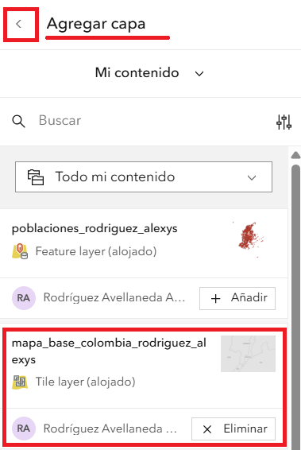
Tile layer (alojado) en Map Viewer- Abrir el menú de opciones (tres puntos horizontales) de la capa cargada y seleccionar
Mover al mapa base(Move to Basemap).
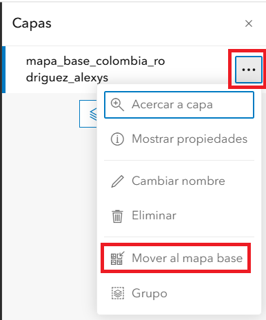
Tile layer de Capas a Mapa Base en el Map Viewer- En la pestaña
Mapa baseverificar que el mapa base actual sea elmapa_base_colombia_[apellido_nombre].
- Agregar capa operativa y configurar ventanas emergentes (Pop-ups) y alias de campos
- Hacer clic en
Addnuevamente para incluircolombia_poblaciones_[apellido_nombre]. - En el panel derecho de la capa, seleccionar
Elementos Emergentes(Pop-ups). - Ocultar campos técnicos del sistema (
OBJECTID,Shape_Length,Shape_Area). - En el panel derecho de la capa, seleccionar
Campos(Fields). - Seleccione cada campo y cambie los
Nombres de visualización. Por ejemplo, para el campoCPOP_CODIGOcambiar por “Código”,CPOB_NOMBREcambiar porMunicipio.
- Cambie el nombre de la capa
- Seleccione los tres puntos (
...) al lado derecho del nombre de la capacolombia_poblaciones_[apellido_nombre], y de clic enCambiar nombre. EscribaPoblacionesy presioneAceptar.
- Finalizar y guardar el mapa web
- En el panel izquierdo, clic en
Guardar y abrir→Guardar como - Asignar título
Mapa_Web_Integrado_[Apellido_Nombre], agregar etiquetas y una descripción técnica. - Seleccionar
Guardar(Save).
- Configurar acceso
- Desde el
Map Viewer, hacer clic en el ícono de menú (tres líneas horizontales en la esquina superior izquierda) y seleccionarContenido. - En la lista de elementos, seleccionar el mapa
Mapa_Web_Integrado_[Apellido_Nombre]para abrir la interfaz deVista general.
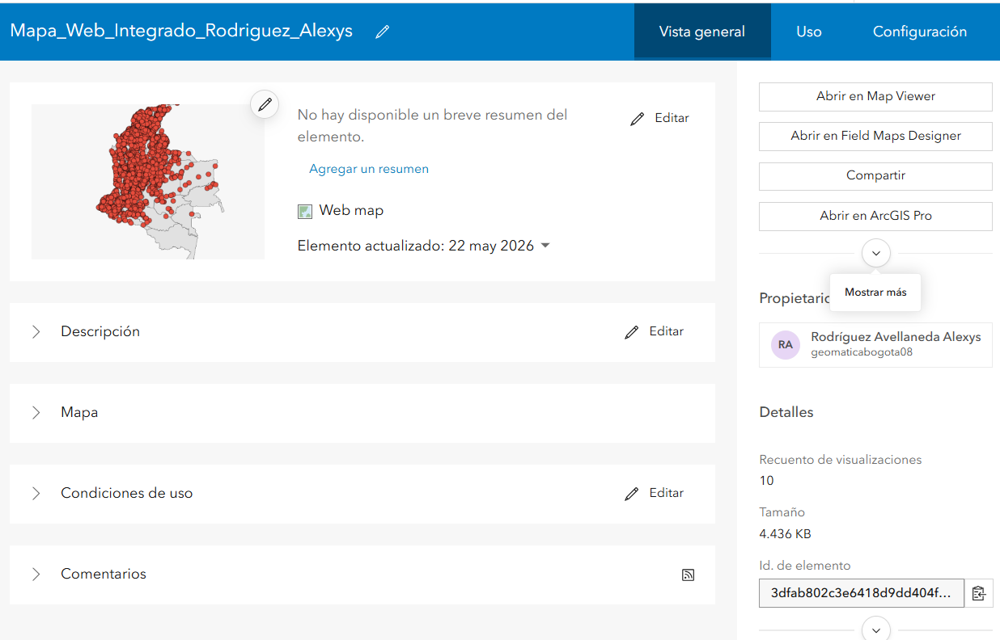
Asegúrese de completar y verificar los siguientes parámetros en el panel lateral de la vista general del mapa, tomando como referencia la configuración técnica establecida en la siguiente imagen:
- Opciones de apertura y compatibilidad: Verificar la disponibilidad de los accesos directos para la visualización y edición del elemento mediante los botones
Abrir en Map Viewer,Abrir en Field Maps DesigneryAbrir en ArcGIS Pro. - Nivel de acceso: Hacer clic en
Compartirdentro de la secciónUso compartidoy establecer el nivel de acceso enTodos (público)para garantizar la visibilidad externa del recurso. - Metadatos e información del elemento: Completar la barra de calidad de la información mediante la inclusión de un resumen ejecutivo, una descripción detallada y la definición de los términos de uso del mapa.
- Etiquetas de indexación: Validar que el elemento cuente con las etiquetas técnicas requeridas (
colombia,geomatica,poblaciones,unal,basemap) para optimizar su catalogación en la plataforma. - Organización del directorio: Confirmar que el mapa se encuentre alojado de forma correcta dentro de la carpeta correspondiente al proyecto, denominada
taller_cartografia_web. - Identificador único: Localizar el campo
Id. de elementopara extraer el código alfa-numérico único del mapa web, el cual es necesario para la estructuración de la URL final en el reporte.
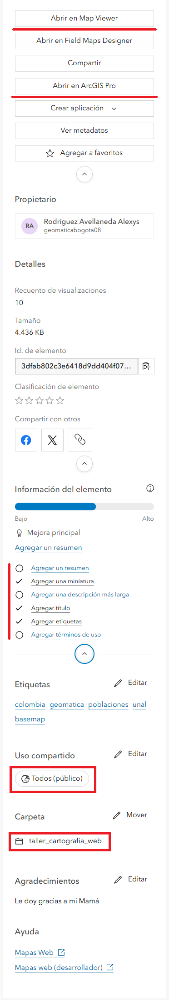
34.3 Ejercicios adicionales (opcional)
Revise los metadatos del mapa final
Verifique los metadados del mapa final y revise las URL para Item Detail y Resource URL. Describa la utilidad de esta opción de metadatos.
Verifique las pestañas Uso y Configuración
Analice la utilidad de las pestañas Uso y Configuración en la Vista General del Mapa Web.
Crear una aplicación a partir de su mapa
Revise las opciones disponibles en la Vista General del Mapa Web para publicar en las siguientes aplicaciones disponibles y comparta el resultado en el informe final:
- Instant Apps
- Experience Builder
- ArcGIS Story Maps
- Dashboards
Verifique la pestaña Portal en el Catálogo de ArcGIS Pro
- Cargue sus capas y las de sus compañeros en la opción
Portalen elCatálogode ArcGIS Pro
Verifique los servicios OGC publicados
Dentro de ArcGIS Pro:
- Cargue las capas publicadas como servicios
WMS - Cague las capas publicadas como servicios
WFS
Usando QGIS:
- Cargue las capas publicadas como servicios
WMS - Cague las capas publicadas como servicios
WFS
34.4 Cuestionario de evaluación y análisis
El documento final (formato Quarto) debe dar respuesta analítica a los siguientes interrogantes técnicos:
Pregunta 1: ¿Qué ventajas mecánicas y de rendimiento ofrece el formato de teselas vectoriales (Vector Tiles) en comparación con servicios tradicionales de teselas ráster (WMS) al desplegar cartografía base en dispositivos móviles y navegadores web? Considere: tamaño de paquetes de datos, consumo de ancho de banda, escalabilidad de estilos y compatibilidad con resoluciones de pantalla variables.
Pregunta 2: Explique la transformación que sufren los datos geoespaciales locales (shapefile/geodatabase) al ser publicados como una Hosted Feature Layer en la infraestructura cloud de ArcGIS Online. ¿Qué cambios ocurren en el almacenamiento de geometrías, proyecciones y tablas de atributos?
Pregunta 3: Justifique técnicamente la selección del rango de escalas implementado en la Parte 2 (configuración de Scale Range para drenajes). ¿Cómo afecta la densidad de vértices y el solapamiento de etiquetas a la velocidad de transferencia de paquetes de datos en conexiones móviles de baja velocidad?
Pregunta 4: En el contexto de la interoperabilidad, explique cómo el uso de sistemas de referencia estándar (MAGNA-SIRGAS para almacenamiento local frente a Web Mercator en servicios web) facilita la integración con terceras plataformas.
34.5 Requerimientos de entrega y reproducibilidad (opcional - el trabajo fue en clase 05/25/2026)
La evaluación del taller se fundamenta en la reproducibilidad del flujo de trabajo y la correcta publicación de recursos espaciales. No se aceptarán archivos binarios .aprx por correo electrónico.
1. Estructura del documento Quarto (.qmd)
Cada estudiante debe redactar un archivo fuente en Quarto (index.qmd) y compilarlo en HTML y PDF. El documento debe contener las siguientes capturas de pantalla y deben almacenarse en la ruta imagenes/:
- Panel de propiedades de CRS en ArcGIS Pro (mostrando EPSG:9377).
- Simbología del Mapa_Base con rangos de escala configurados.
- Panel de configuración de publicación (Share As Web Layer) antes de hacer clic en Publish.
- Verificación de capas en ArcGIS Online (sección Content).
- Mapa web final en Map Viewer con pop-up abierto demostrando los atributos configurados.
2. Publicación en GitHub y entrega final
Crear repositorio público:
taller-cartografia-web-[apellido_nombre]Estructura del repositorio:
taller-cartografia-web-[apellido_estudiante]/
├── index.qmd
├── index.html
├── index.pdf
├── imagenes/
│ ├── 01_crs_configuration.png
│ ├── 02_mapa_base_simbologia.png
│ ├── 03_share_as_web_layer.png
│ ├── 04_arcgis_online_content.png
│ └── 05_mapa_web_final_popup.png
├── .gitignore
└── README.md
- Compilar el documento localmente:
cd taller-cartografia-web-[apellido_estudiante]
quarto render index.qmd --to html
quarto render index.qmd --to pdf- Hacer commit y push:
git add .
git commit -m "Taller 1: Flujos de trabajo ArcGIS Pro -> ArcGIS Online"
git push origin main- Activar GitHub Pages:
- Ir a Settings del repositorio.
- Sección “Pages”.
- Source: Deploy from a branch.
- Branch:
main/ folder:/ (root). - Hacer clic en Save y esperar la compilación de la acción.
- Mecanismo de entrega:
- Enviar por los canales de la asignatura:
- URL del repositorio GitHub.
- URL del sitio GitHub Pages.
- URL del mapa web en ArcGIS Online.
- Enviar por los canales de la asignatura:
3. Criterios de evaluación
| Criterio | Ponderación | Descripción |
|---|---|---|
| Reproducibilidad | 25% | Estructura de directorios, versionamiento Git, documento Quarto compilable. |
| Completitud técnica | 30% | Publicación correcta de Feature Layer y Vector Tile Layer, CRS validado. |
| Calidad analítica | 25% | Respuestas fundamentadas a preguntas del cuestionario con rigor técnico. |
| Documentación y capturas | 15% | Evidencia visual de cada paso, metadatos completos, pop-ups configurados. |
| Presentación | 5% | Formato Quarto válido, referencias correctas, escritura técnica clara. |
34.6 Recursos adicionales
34.7 Anexo: Troubleshooting común
Error: “Invalid CRS during publish”
Asegurar que ambos mapas en el proyecto posean el mismo CRS antes de intentar el empaquetado. Ejecutar siempre la herramienta Analyze y resolver todas las advertencias.
Vector tiles publicados pero no visibles en Map Viewer
Validar que la capa haya sido configurada explícitamente como base de referencia espacial. En Map Viewer, desplegar el menú de opciones de la capa y seleccionar Move to Basemap.
Pop-up no muestra atributos esperados
En Map Viewer, seleccionar Configure Pop-ups sobre la capa de entidades y verificar la lista de campos habilitados para visualización.
Repositorio GitHub Pages no actualiza
Limpiar la caché del navegador, verificar el estado de despliegue en la pestaña Actions de GitHub y asegurar que los cambios locales hayan sido efectivamente empujados al repositorio remoto.